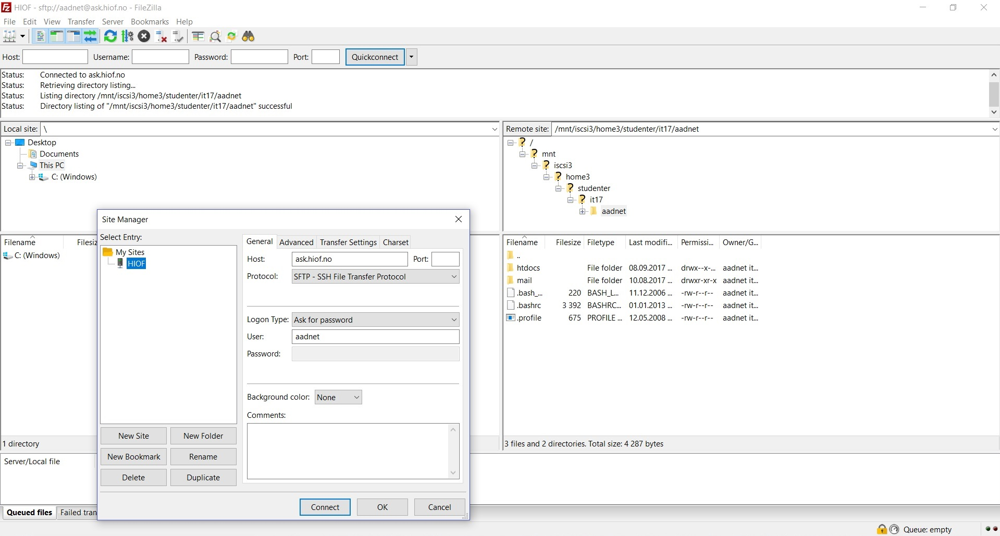

FTP: grunnleggende
Når det gjelder hjemmesider så vil alle dokumenter vi lager ligge lokalt på vår datamaskin. Siden vi vil at også andre skal kunne se hjemmesiden vår må vi overføre filene til en webserver. Som tidligere nevnt vil en webserver fungere både som lagringsplass, og som mottaker/avsender for en evt. nettleser. Navnet på denne metoden er FTP - File Transfer Protocol.
Protokoller
En protokol er egentlig bare en standard for en metode, den kanskje mest kjente protokollen er HTTP (Hyper Text Transfer Protocol). FTP kan sammenliknes med når vi flytter filer mellom vår pc og DropBox eller Google Drive. Vi kan også bruke FTP til å motta informasjon ifra en server, for eksempel hvis vi sitter på en annen datamaskin og ønsker å redigere hjemmesiden vår. Webservere flest er lukket, og for å få tilgang må vi oppgi både navn på verten (host name), port, samt vårt eget brukernavn og passord for å få klarering.
FTP-klienter, og FileZilla-generelt
Det er ingenting i veien for å bruke FTP vha. en nettleser, eller kommandolinja, men selve protokollen utføres som oftest vha. en FTP-klient. Et eksempel på en slik er FileZilla. Prosessen for FTP gjennom FileZilla er vist i bildet til høyre.
Til høyre på bildet så har vi den lokale lagringsplassen på min datamaskin, mens nede til venstre på bildet så har vi Remote site, altså serveren sin fysiske lagringsplass. Host er i dette tilfellet ask.hiof.no. Når jeg ønsker å oppdatere hjemmesiden min med et nytt innhold så må jeg flytte filene mine til mappa "HTDocs" inne på "aadnet".